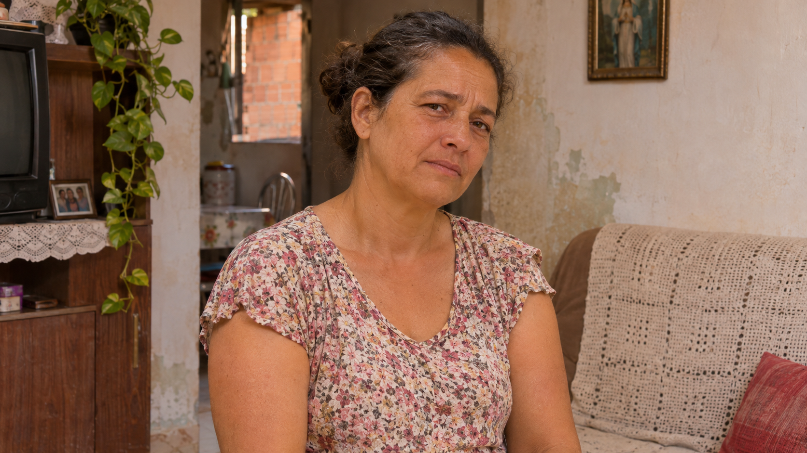
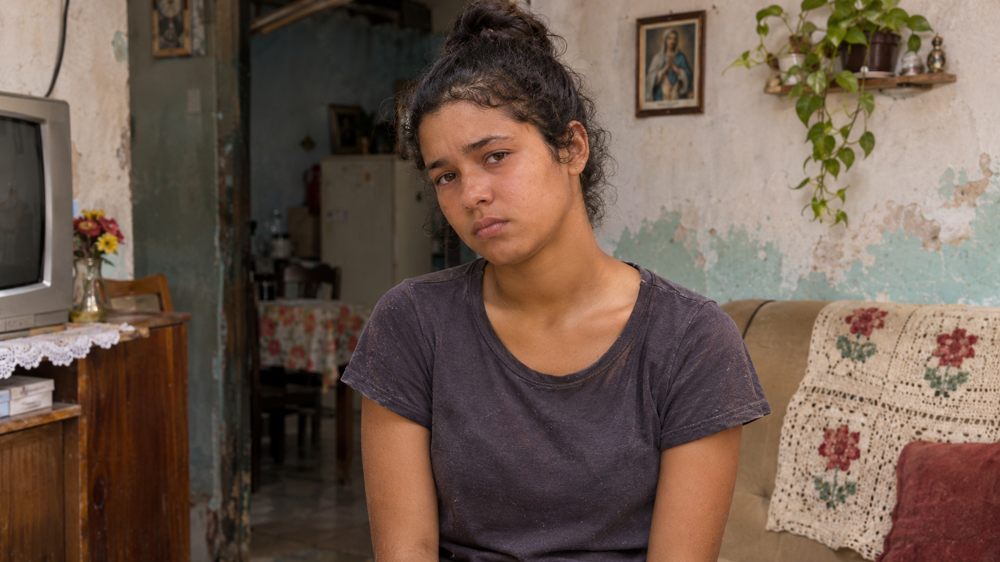
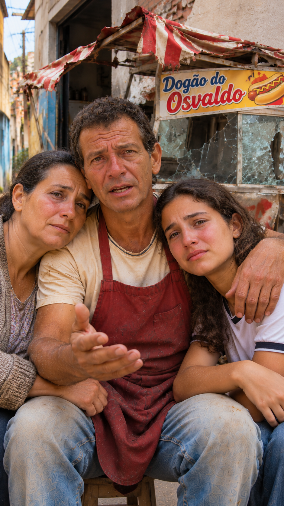

Campanha solidária · 30 dias
Vamos reconstruir o carrinho do Seu Osvaldo
Ele perdeu o carrinho de cachorro-quente que sustentava a família inteira e está desesperado. Com a sua ajuda, ele volta a viver com dignidade.
Ser Cristão de Verdade é ajudar quem precisa
Campanha solidária · 30 dias
Ele perdeu o carrinho de cachorro-quente que sustentava a família inteira e está desesperado. Com a sua ajuda, ele volta a viver com dignidade.
Tempo restante
Seu Osvaldo é um vendedor humilde de cachorro-quente, conhecido pelo seu carrinho, o Dogão do Osvaldo. Um homem simples, trabalhador e dedicado à família.
Durante uma manifestação política, Osvaldo é humilhado e hostilizado por estar usando uma camiseta e bandeiras do Brasil. Seu carrinho é destruído e suas mercadorias são roubadas, deixando-o sem sua única fonte de renda.
A situação é ainda mais delicada: sua esposa enfrenta uma doença crônica e sua filha sonha em cursar Medicina. Com as contas chegando e sem condições de trabalhar, ele não sabe como sustentar sua família.
Seu Osvaldo só deseja uma oportunidade de recomeçar, reconstruir seu carrinho e voltar a trabalhar com dignidade.
Qualquer valor ajuda — e compartilhar esta página ajuda tanto quanto doar.
Deslize para o lado para ver todas




Cada doação aproxima o Seu Osvaldo de voltar a trabalhar.
Você vai doar
R$ 100
Prestação de contas atualizada ao longo da campanha.
Assim que arrecadarmos os fundos necessários, iniciaremos as compras do carrinho novo e equipamentos. Os comprovantes de cada compra serão compartilhados aqui para garantir transparência total com todos os doadores.
Começamos a corrente do bem com a meta de R$ 100.000 em 30 dias para reconstruir o carrinho do Seu Osvaldo e dar fôlego à família enquanto ele não volta a trabalhar.
Quem quiser conferir pode solicitar pelo contato no rodapé:
Escolha quanto você quer doar
Deixe seu contato para registrarmos sua doação de R$ 100 e te enviarmos a prestação de contas.
Usamos seu contato apenas para confirmar a doação e enviar notícias da campanha. Não compartilhamos com ninguém.
Faça o PIX de R$ 100 para concluir.
Gerando seu QR Code PIX...
QR Code indisponível no momento — use o código copia-e-cola abaixo.
PIX copia e cola
Não conseguimos gerar o PIX agora. Tente novamente em instantes ou chame no WhatsApp abaixo.